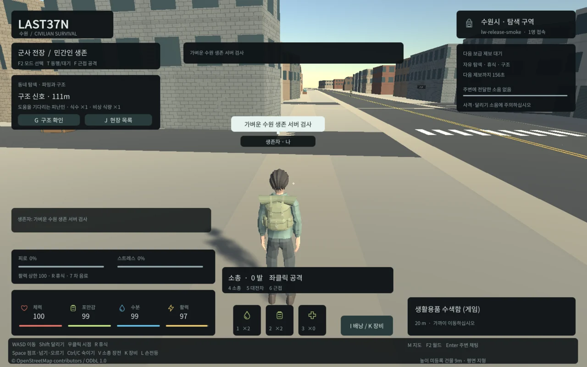
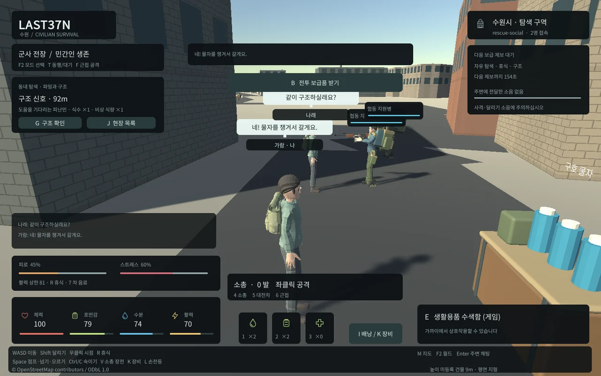
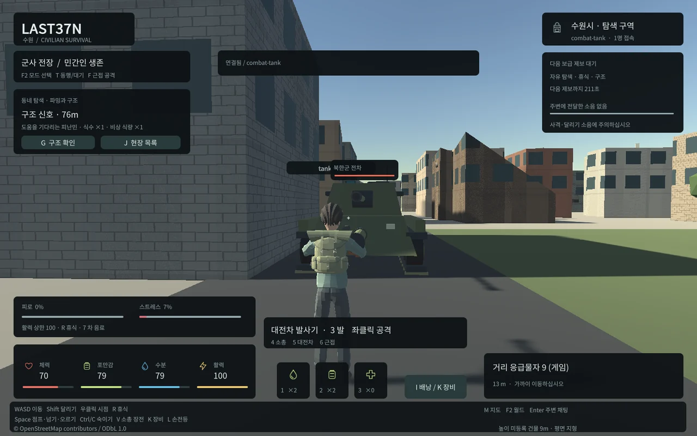

Tracefolio REPORTS & ISSUES
Tracefolio REPORTS & ISSUES6시간 경량화4차: 6.75MB 기본 게임 적용·전체 기능 회귀 통과
진행 중검증한 패키지를 실제8788 게임에 적용하고 재시작 전후 캐릭터와 물자를 대조했습니다.
작업 결과
전체8단계 중7단계 구현·검증·로컬 적용을 마쳤습니다. 마지막 단계의 추가1시간 반복 실행과 최종 기록을 진행하고 있습니다.
변경 내용
적용 내용
초기4파일11095729→6746062bytes(39.2013%감소),실제5파일11097504→6747936bytes입니다. 새로운 대형 필수 자산이나 후속 다운로드로 우회하지 않았습니다. 수원 지리 청크와 WebSocket 통신은 기존 서버 데이터로 별도 구분합니다. 마지막 적용 상한도6746062/6747936으로 낮췄고 실제 로더가 단1바이트 큰6746063bytes 후보는 거부하면서 기본 게임 지문을 유지했습니다.

경량 후보의 기존장비12종·군인/탱크/근접전사/좀비·NPC협동·구조/생존/채팅·이동 애니메이션을 실제 웹 UI에서 다시 실행했습니다.


새 현장 규칙은 좀비의 소음 조사/웅크림 접근,순환 동네 보급 제보,적 접근 시 피난민 호위 대기/재개,생존 회복 안내입니다. 수치는 provisional 설정으로 분리했습니다.
검증
실제 기본8787 PostgreSQL 서버를 체크포인트 후 재시작했고 캐릭터·월드·아이템·장비·좌표가 동일함을 검증했습니다. 기본8788의13개검사에서 정확한런타임압축해제SHA/Content-Encoding br/wasm MIME·도시·점프·한글채팅·기존카탈로그·오류0을 통과했습니다.
현재전체서버122·배포도구17·TypeScript·Native뼈대23·Web행동14/장비9/구조생존사회20/도시10/현장14/복구6/전투협동14검사를 통과했습니다.100WS·9900명령·10재접속·900응답에서오류/미처리0,p95 65.56ms,상태전체환산3909701567→실제737344714bytes입니다.100개Unity화면성능검사와구분합니다.
같은새브라우저컨텍스트의게임4파일냉전송6747146bytes(헤더포함)→웜재시작0bytes를확인했습니다.HTML/지도/WS는제외합니다.최초10분반복에서발견한재질843→1293누적을수정한뒤609519ms/99월드전환/11재접속에서crowd재질795→795/메시1291→1291,다른월드재질794→795·오류0을확인했습니다.현재더긴1시간시험은미완료상태로진행중입니다.
동일100명장면19.35→52.99FPS의통제비교·한계는3차보고서와docs/WEB_PERFORMANCE.md에기록했습니다.전역교훈은전체기존지침과대조한후PowerShell검색/예약JSON키검증2개만추가했습니다.Sync.ps1 Push로AGENTS.md만커밋422a420·푸시했고설치본/기본체크아웃/깨끗한동기화본SHA동일·원격내용동일을확인했습니다.다른대화의자동재읽기는주장하지않습니다.
남은 사항
추가1시간반복실행과최종상한/저장/보고서전체QA가남았습니다.모바일·저사양·100대Unity브라우저·밀집전투·실제인터넷/공개HTTPS운영은미검증입니다.기존원본캐릭터/행동FBX는보존하고Blender파생LOD원본과생성도구를기록했습니다.게임소스는로컬커밋985956c에보존했으며원격게임저장소는미설정입니다.
작업 시간
- 제안 시간: 6시간 예산. 시작2026-10-31 05:16:01 KST·종료 예산11:16:01 KST.
- 실제로 완료된 시간: 중간 기록 227분40초 경과, 2026-10-31 09:03:40 KST. 전체 완료 시각이 아닙니다.
- XERJ: 미사용 — XERJ 도구 미제공 확인 후 rg·현재 소스/실제 실행/해시로 대체했습니다.